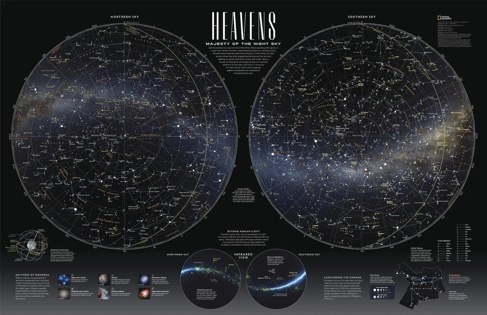
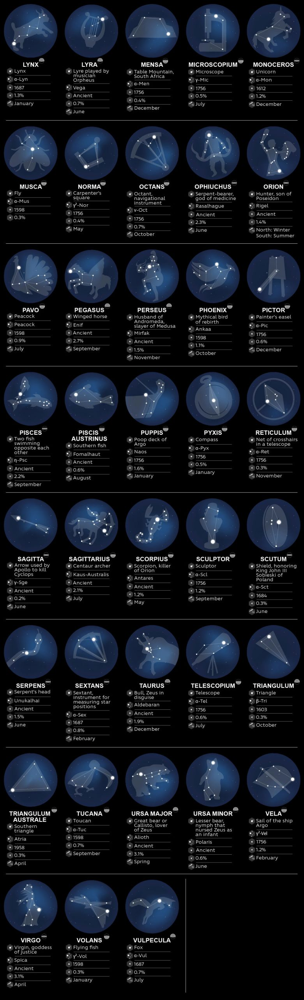
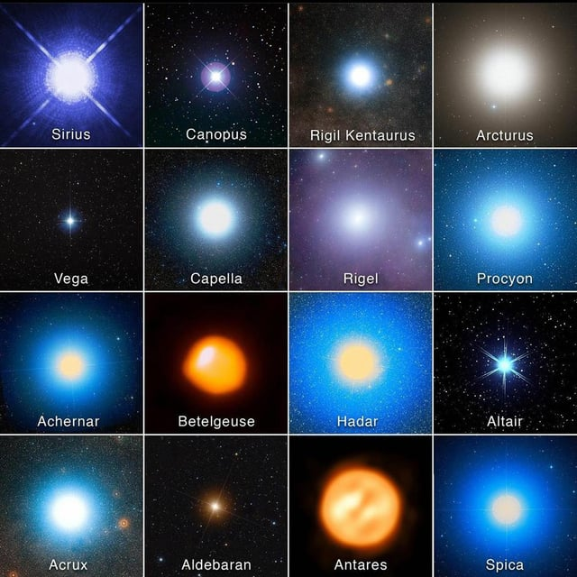
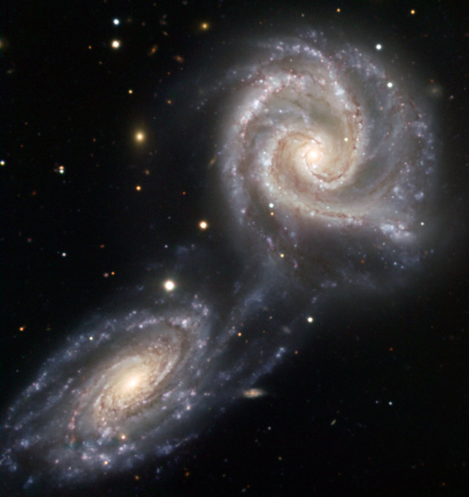
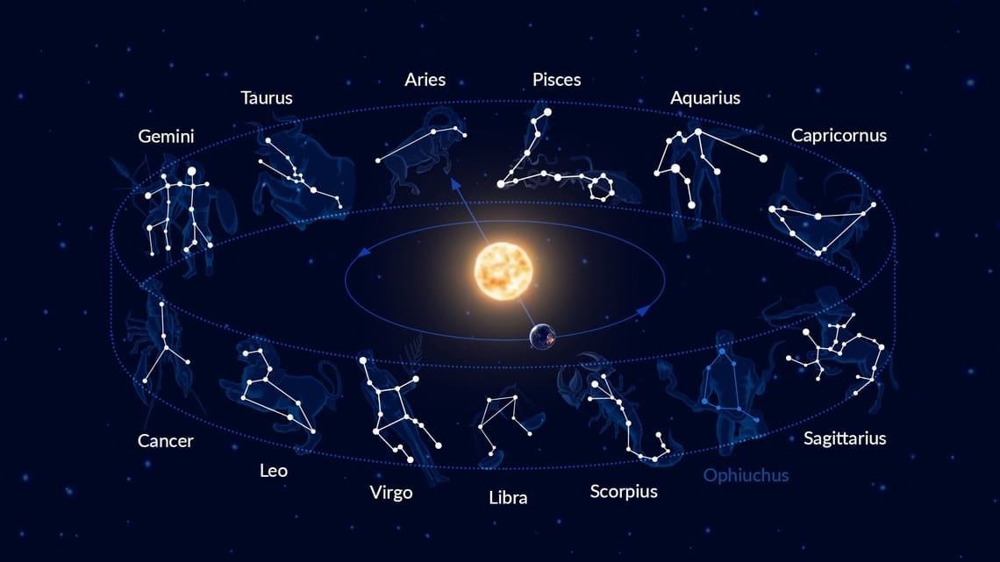
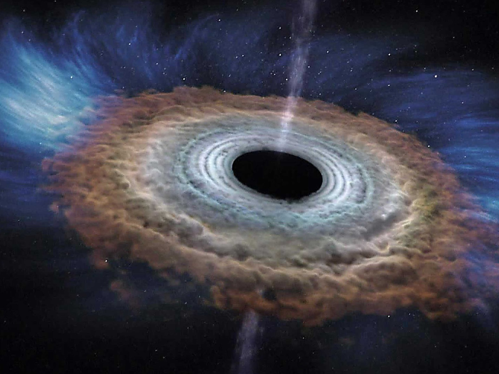

✨ Stars & Phenomena
A museum of constellations, bright stars, galaxies, nebulae, and cosmic wonders.

Constellations
Explore the 88 official constellations that map our night sky.
Constellations are star patterns humans connected into shapes for navigation, mythology, and sky mapping.
There are 88 official constellations defined by the International Astronomical Union.
⭐ **Key Facts** • Used for navigation for thousands of years • Many come from Greek mythology • Some contain star clusters, nebulae, and galaxies • Zodiac constellations lie along the ecliptic • Orion is the most recognizable constellation
⭐ **Why They Matter** Constellations help astronomers map the sky and preserve ancient cultural stories.
⭐ **Key Facts** • Used for navigation for thousands of years • Many come from Greek mythology • Some contain star clusters, nebulae, and galaxies • Zodiac constellations lie along the ecliptic • Orion is the most recognizable constellation
⭐ **Why They Matter** Constellations help astronomers map the sky and preserve ancient cultural stories.

Constellation Guide
Mythology, brightest stars, and celestial patterns.
This chart shows constellations with their symbolic figures, brightest stars, and discovery dates.
It includes both ancient and modern constellations, from Orion to Microscopium.
⭐ **Highlights** • Orion: Betelgeuse & Rigel • Scorpius: Antares • Lyra: Vega • Ursa Major: Big Dipper • Taurus: Aldebaran & the Pleiades
⭐ **Highlights** • Orion: Betelgeuse & Rigel • Scorpius: Antares • Lyra: Vega • Ursa Major: Big Dipper • Taurus: Aldebaran & the Pleiades

Brightest Stars
The most luminous stars visible from Earth.
Bright stars vary in color, temperature, and distance — showing the diversity of stellar evolution.
⭐ **Key Stars** • Sirius — brightest star • Canopus — extremely luminous • Arcturus — orange giant • Vega — blue‑white star • Rigel — blue supergiant • Betelgeuse — red supergiant • Antares — red supergiant • Spica — blue giant
⭐ **Why They Matter** Bright stars define constellations and help measure cosmic distances.
⭐ **Key Stars** • Sirius — brightest star • Canopus — extremely luminous • Arcturus — orange giant • Vega — blue‑white star • Rigel — blue supergiant • Betelgeuse — red supergiant • Antares — red supergiant • Spica — blue giant
⭐ **Why They Matter** Bright stars define constellations and help measure cosmic distances.

Star Clusters & Nebulae
Birthplaces of stars and cosmic clouds of gas and dust.
Nebulae are clouds of gas and dust — the birthplaces of stars.
Star clusters are groups of stars formed together.
⭐ **Types of Nebulae** • Emission nebulae • Reflection nebulae • Planetary nebulae • Supernova remnants
⭐ **Why They Matter** Nebulae reveal how stars form, live, and die.
⭐ **Types of Nebulae** • Emission nebulae • Reflection nebulae • Planetary nebulae • Supernova remnants
⭐ **Why They Matter** Nebulae reveal how stars form, live, and die.

Galaxies
Massive islands of stars, gas, dust, and dark matter.
Galaxies are enormous systems containing billions of stars.
⭐ **Key Facts** • Milky Way: 100–400 billion stars • Andromeda: nearest large galaxy • Spiral galaxies: young stars • Elliptical galaxies: older stars • Galaxy mergers trigger star formation
⭐ **Why They Matter** Galaxies show how the universe evolves over billions of years.
⭐ **Key Facts** • Milky Way: 100–400 billion stars • Andromeda: nearest large galaxy • Spiral galaxies: young stars • Elliptical galaxies: older stars • Galaxy mergers trigger star formation
⭐ **Why They Matter** Galaxies show how the universe evolves over billions of years.

Galaxy Mergers
Cosmic collisions that reshape the universe.
Galaxy mergers occur when two galaxies collide and combine.
⭐ **Key Facts** • Trigger massive star formation • Create tidal streams • Can form elliptical galaxies • Milky Way & Andromeda will merge in ~4 billion years
⭐ **Key Facts** • Trigger massive star formation • Create tidal streams • Can form elliptical galaxies • Milky Way & Andromeda will merge in ~4 billion years

Black Holes
Gravity so strong that not even light escapes.
Black holes form when massive stars collapse.
⭐ **Key Facts** • Stellar‑mass black holes • Supermassive black holes • Accretion disks glow brightly • Jets can extend thousands of light‑years • First image: M87* (2019)
⭐ **Why They Matter** Black holes test the limits of physics and Einstein’s relativity.
⭐ **Key Facts** • Stellar‑mass black holes • Supermassive black holes • Accretion disks glow brightly • Jets can extend thousands of light‑years • First image: M87* (2019)
⭐ **Why They Matter** Black holes test the limits of physics and Einstein’s relativity.